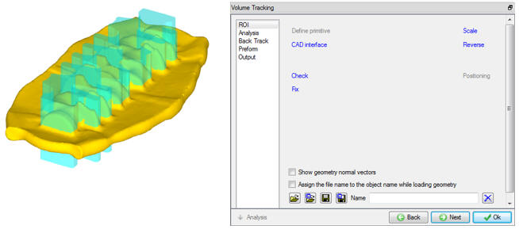
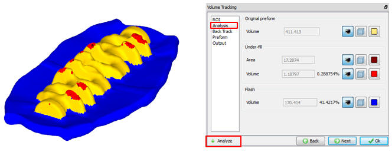
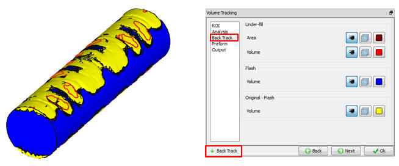
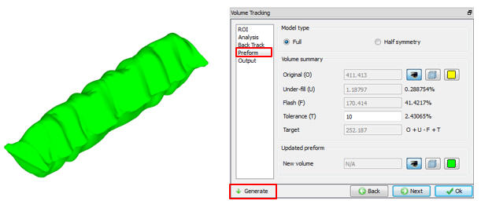
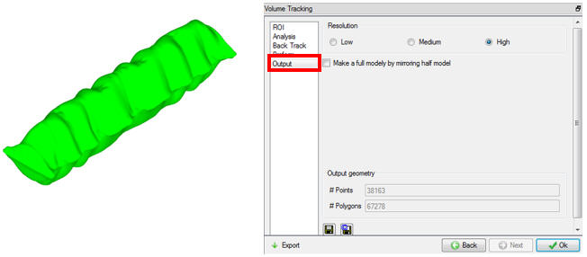

User can navigate Volume tracking wizard using
Volume tracking method tracks back underfill and flash area from finish part to preform. This information will be used to update preform shape.

Region of Interest window
User can navigate Volume tracking wizard using  button or can move to specific page directly by clicking on the respective option.
button or can move to specific page directly by clicking on the respective option.
ROI : User can define the ROI window by importing the Geometry from a file. Outside ROI is considered as flash region. For the region inside ROI, underfill area and volume are calculated and tracked back into the initial billet. User must define ROI for volume tracking (See Fig.26.6.14.1.).
Analyze: After defining ROI, in Analyze window user can use Analyze button to display underfill and flash regions over the workpiece. In Fig., red indicates Under-fill region and Blue indicates Flash region, we can also observe the Under fill volume and Flash volume along with percentage in Analysis window (See Fig.26.6.14.2.) .

Volume tracking Analysis window
Back Track : After analyzing user can navigate to Back Track page and click on Back Track button to start calculation of volume tracking back into initial billet. User can use step browser to go to first step where initial billet is available and we can observe the volume of material moved into flash (blue in Fig.26.6.14.3.), Under-fill (red in Fig.26.6.14.3.).

Back Track window
Preform: Once back tracking is completed user can navigate to Preform page to generate preform shape based on the back tracking calculations. User can also define volume tolerance for flash which will be considered while generating preform. User can generate Preform by clicking on Generate button in Preform page. In preform page user also have options to generate preform for full object or Half symmetry object. (see Fig.26.6.14.4.)

Volume Tracking Preform Window
Output : In Output window, Generated preform shape can be saved into geometry file using Save Geometry option (See Fig.26.6.14.5.) .
Different resolutions can be selected to fine tune the preform shape. If preform is generated for half symmetry user can use Make full model by mirroring half model option available to mirror the Half model geometry to Full model. After selecting Resolution
option or Make full model by mirroring half model option, click on Export to create new preform geometry for selected and save. User can save geometry into file  icon or into
library
icon or into
library  icon in Output page.
icon in Output page.

Volume Tracking Output window